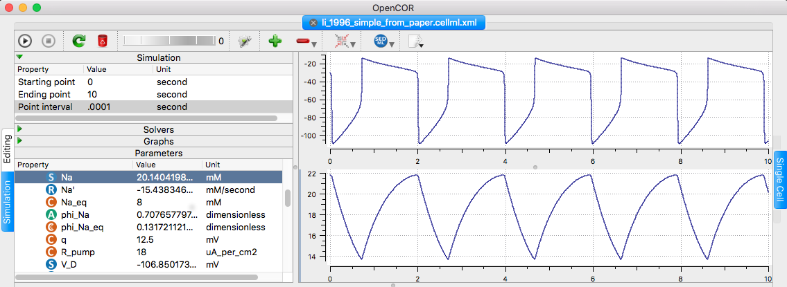

Li YX, Bertram R, Rinzel J (1996) Modeling N-methyl-D-aspartate-induced bursting in dopamine neurons. Neuroscience 71:397-410[PubMed]
is available at the cellml.org website: https://models.cellml.org/exposure/dfe4f6c90d58266f0f5d6d320c291e40/li_1996_simple_from_paper.cellml/view " The model recreates figure 2 from the paper (gc=0 so the soma and the dendritic compartments are uncoupled), however - in order to get the frequency of oscillations correct (with a period of 2s) the variable alpha was set to 0.5 (as opposed to 0.173 which was given in the paper). This change has to be confirmed with the original model authors." Example: changing the ending point to 10 seconds, point time to 0.001 and right-clicking the V_D and then Na in parameter list (select Plot against integration variable for each), and running in opencor (click upper left play triangle) creates the following graph similar to fig 2 top traces: 